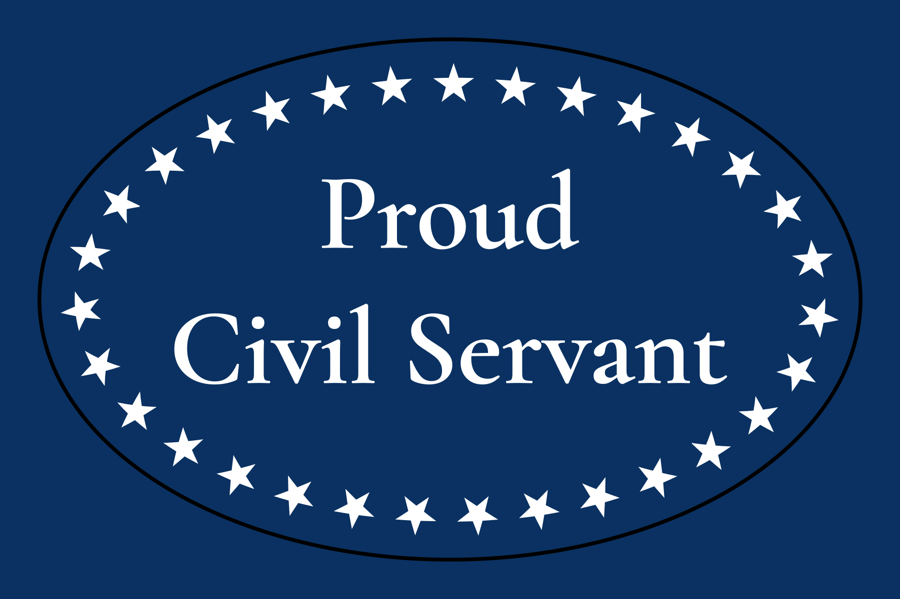
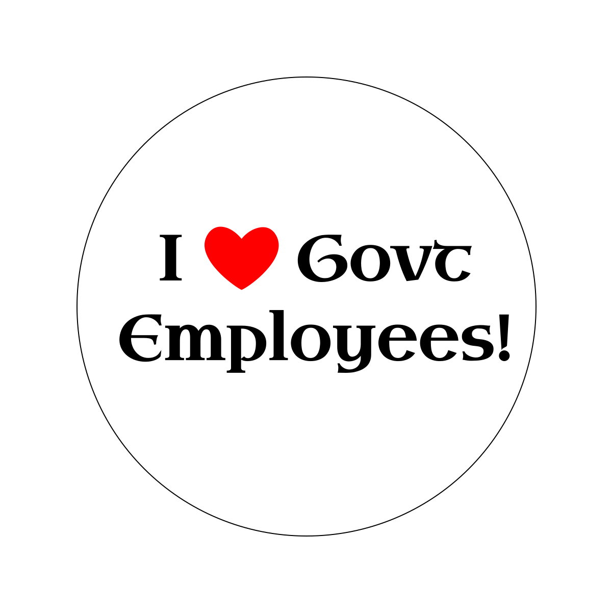

Dean's Opinions on Civil Servants
Background
My father worked as a county agricultural agent for the University of Minnesota Extension Service for over two decades, a public job. He enjoyed it, worked hard and conscientiously, and valued he work he and the organization could do for the people of the county.
I worked for the State of Minnesota for 16 years. I tried to be conscientious and am proud of much of the work I did there. While there were inefficiencies, they were mostly related to management and bureaucracy than any corruption or lazyness. Many of the inefficiences are probably common to any large, bureaucratic organization, even a private one. Almost everyone who I worked with, including the managers, worked hard and tried to do good work. (The managers just reorganized things too many times or something. I wasn't on that level.) Many people were serious about the mission of the organization and how it could serve the state. Even those who were not were trying to do good work. I can only think of one or two exceptions out of at least a hundred that I knew well enough to tell.
Opinions
Most of the vitriol against government services is deliberately manufactured and is out of proportion to any real shortcomings of the government. This includes the Minnesota State Government and the U.S. Federal government. The stereotype that most government employees just lean on shovels instead of working hard is offensive and wrong. I am sure it happens. Where it happens, it should be fixed. However, I do not believe that is how most government employees or departments behave. Furthermore, villifying public employees as a class is not only unfair, but will discourage talented, principled people from joining the government. Our nation's (the United States') 2025 indiscriminate assault on our civil servants and on the civil service itself is an example of cutting off our nose to spite our face. It may take well over a decade to recover, and that is assuming we stop.
Thank you
I cannot fix our society or change the current regime. However, I can show appreciation. I can say thank you.
Public employees, thank you for your service.
Buttons
Here are a couple of button designs I made in support of our civil servants and in opposition to those villifying them.


InkScape SVG Source Files
Here are the InkScape SVG source files for the buttons just in case you want to modify them. They require fonts from Google Fonts. SVG is a text-based format, so to see which fonts you need, open the file in a text editor like Notepad and search for "font-family".